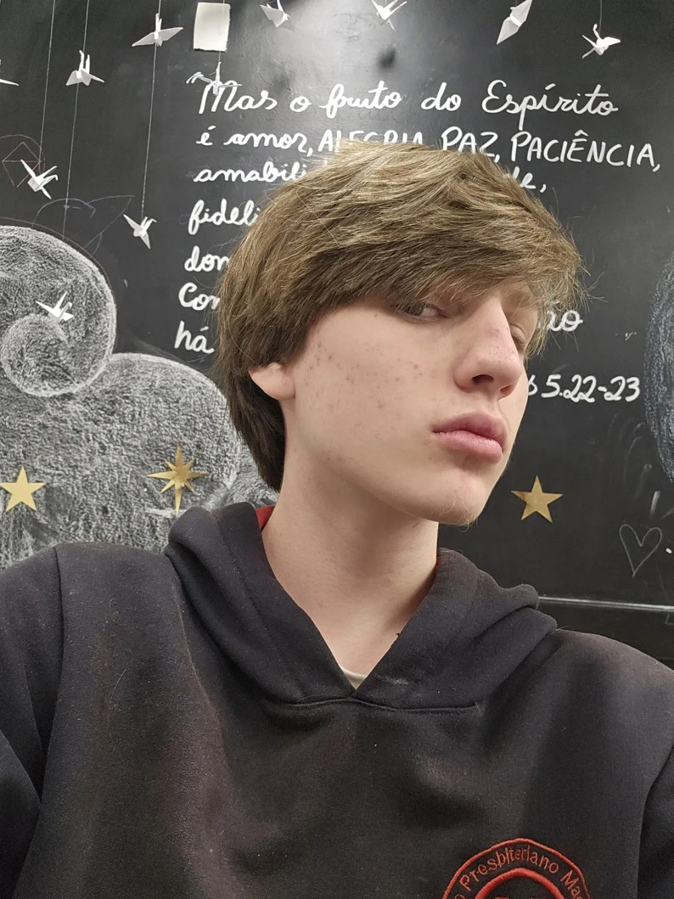

01
Criatividade
Gosto de imaginar possibilidades e transformar ideias em criações. Inventar algo novo é uma das coisas que mais me motivam.
PORTFÓLIO PESSOAL · 2026
Criatividade dentro e fora do jogo.
Tenho 19 anos e gosto de criar, jogar, viver histórias e me desafiar no kickboxing. Este é um pouco do meu universo.
Conheça meus hobbies
01 / QUEM SOU
Sou uma pessoa criativa e gosto de transformar ideias em coisas novas. Tenho 19 anos e meus interesses vão dos jogos e RPGs ao kickboxing.
Gosto da liberdade de imaginar, criar e experimentar. Os jogos me permitem explorar novos desafios, o RPG abre espaço para histórias e personagens, e o kickboxing é uma forma de desenvolver disciplina e superar limites.
02 / MEUS INTERESSES
Gosto de imaginar possibilidades e transformar ideias em criações. Inventar algo novo é uma das coisas que mais me motivam.
Os jogos são uma forma de diversão, desafio e exploração. Gosto de descobrir novos mundos e experimentar maneiras diferentes de jogar.
Adoro a possibilidade de interpretar personagens, imaginar histórias e construir aventuras com outras pessoas.
Gosto de lutar kickboxing. A prática reúne técnica, concentração, disciplina e a vontade de evoluir a cada treino.
03 / EXPERIMENTE
Um pequeno elemento do universo dos RPGs: escolha um dado e descubra o resultado da sua rolagem.
Aguardando sua rolagem.
Últimas rolagens: nenhuma.